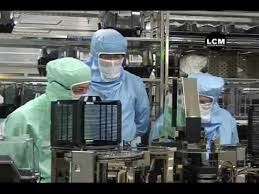

Un'esperienza che ricorderò con molto piacere di questi tre anni e che mi ha insegnato che ci sono lavori molto belli e laboratori molto ben organizzati, è la gita presso l'azienda “Stmicroelectonics”, situata ad Agrate Brianza, avvenuta con lo scopo di vedere come venivano creati i microchip su dei wafer. Ci hanno illustrato un filmato riguardante il loro operato e le nuove tecnologie. Successivamente ci hanno accompagnato all'interno di un laboratorio per osservare come alcuni addetti prendevano un chip, lo inserivano in un apposito macchinario, all'interno del quale venivano eliminate tutte le parti insane in modo tale da poter poi essere montato sui dispositivi. Inoltre abbiamo visitato lo spazio dedicato alla produzione di wafer: ci hanno informato sul fatto che ne venivano creati addirittura 12000 in una settimana! Infine abbiamo osservato dei robot da loro prodotti. Sono rimasto molto colpito dall'ordine, la cura e la pulizia dei laboratori, e più precisamente di quello dove avveniva la produzione dei wafer poiché addirittura venivano usate luci apposite prive di raggi ultravioletti. Posso concludere dicendo che questa gita mi ha mostrato uno degli ambienti in cui chiunque aspirerebbe ad entrare e svolgere così una brillante carriera a livello internazionale, io per primo.